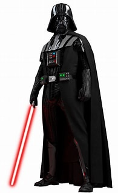
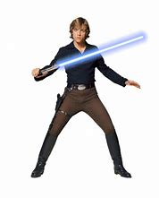
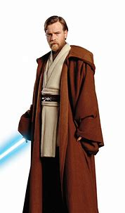

Star wars
"Star Wars” é uma série de filmes de ficção científica criada por George Lucas. A saga é centrada em um universo fictício de galáxias distantes e conta a história da luta entre o bem e o mal, com elementos de mitologia e política. Os personagens principais incluem Jedi, que são guerreiros que usam a Força para o bem, e Sith, que usam a Força para o mal. A série original começou com o filme “Star Wars: Episódio IV - Uma Nova Esperança” em 1977 e se expandiu para incluir trilogias prequela e sequela, além de filmes derivados e séries de televisão.
Saber maisVocê será redirecionado para a página oficial
Personagens Principais
Darth Vader
Darth Vader, antes Anakin Skywalker, é um personagem icônico de Star Wars. Antigo Jedi heroico, seduzido pelo lado sombrio da Força, tornou-se um poderoso Lorde Sith sob o Império Galáctico, lutando contra a Aliança Rebelde.
Luke Skywalker
Luke Skywalker, filho de Anakin Skywalker e Padme Amidala, é um personagem central em Star Wars. Criado em Tatooine, tornou-se um Jedi lendário, ajudou a derrubar o Império Galáctico e descobriu a verdade sobre sua origem, terminando a tirania dos Sith.
Obi Wan
Obi-Wan Kenobi, mestre Jedi e mentor de Anakin e Luke Skywalker, é um personagem central em Star Wars. Lutou na Guerra dos Clones, viveu como eremita e ajudou a derrotar o Império, sendo uma figura chave na formação e redenção de Darth Vader.
Yoda
Yoda, um mestre Jedi lendário, é notável por sua sabedoria e poderosa conexão com a Força. Pequeno em tamanho, mas influente, treinou Jedi por mais de 800 anos, teve papéis cruciais nas Guerras Clônicas e na formação de Luke Skywalker.